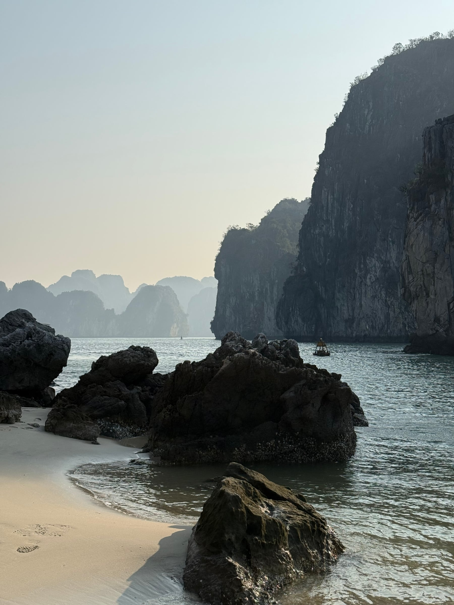
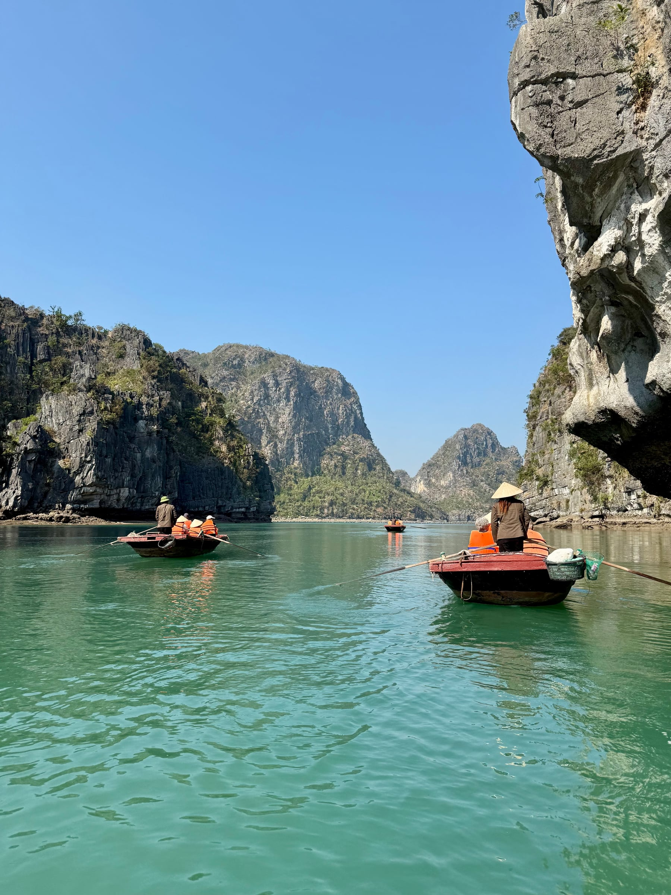
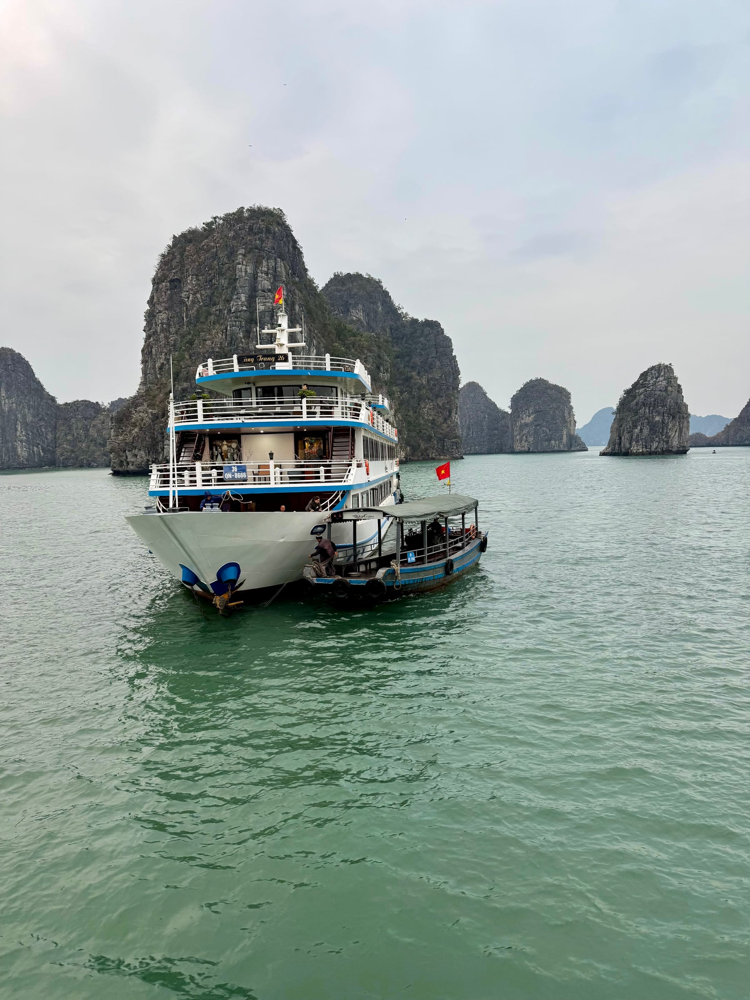
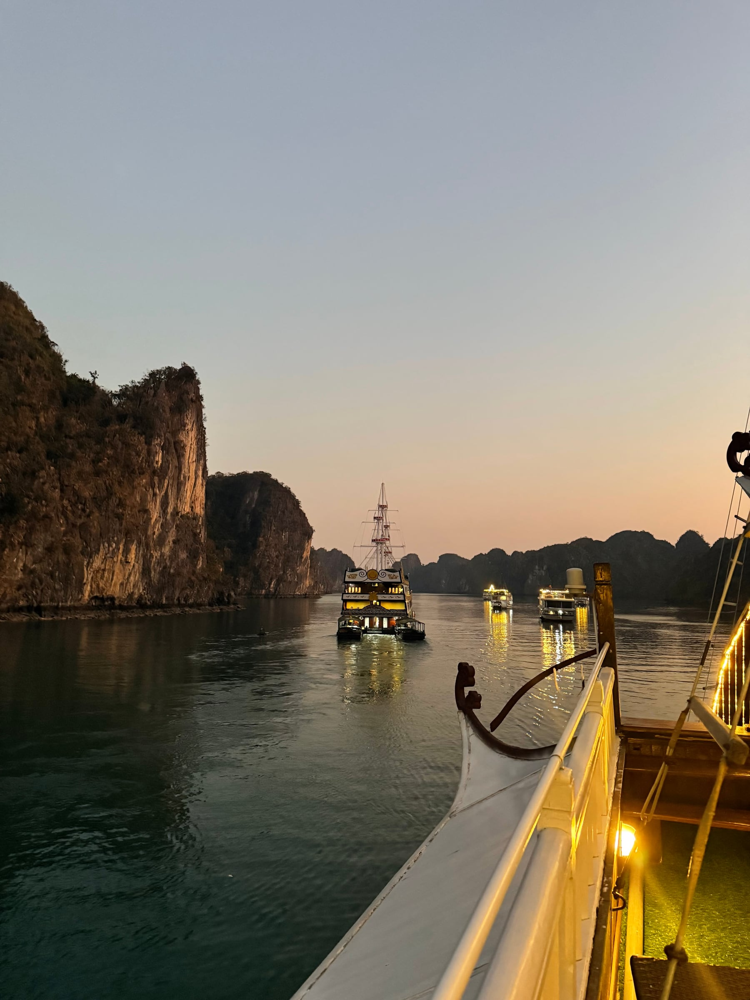
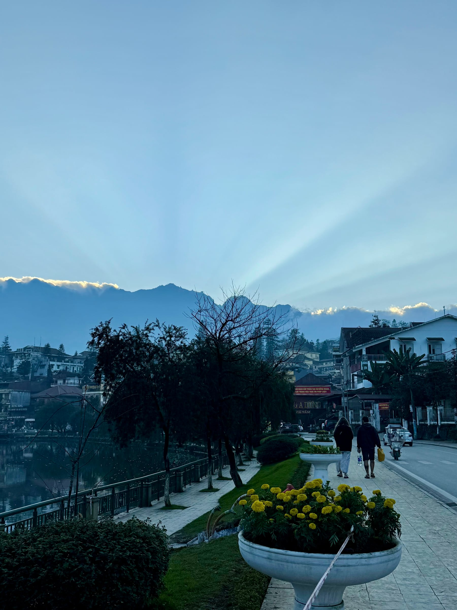
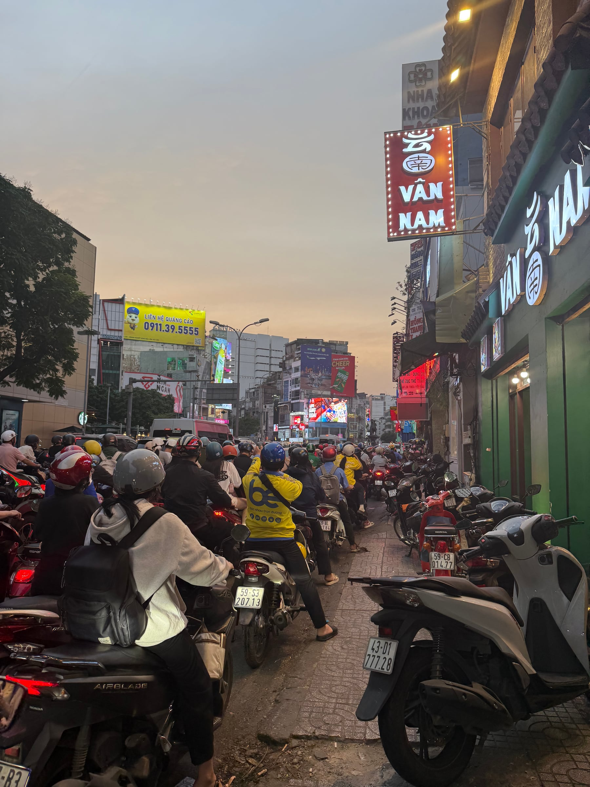
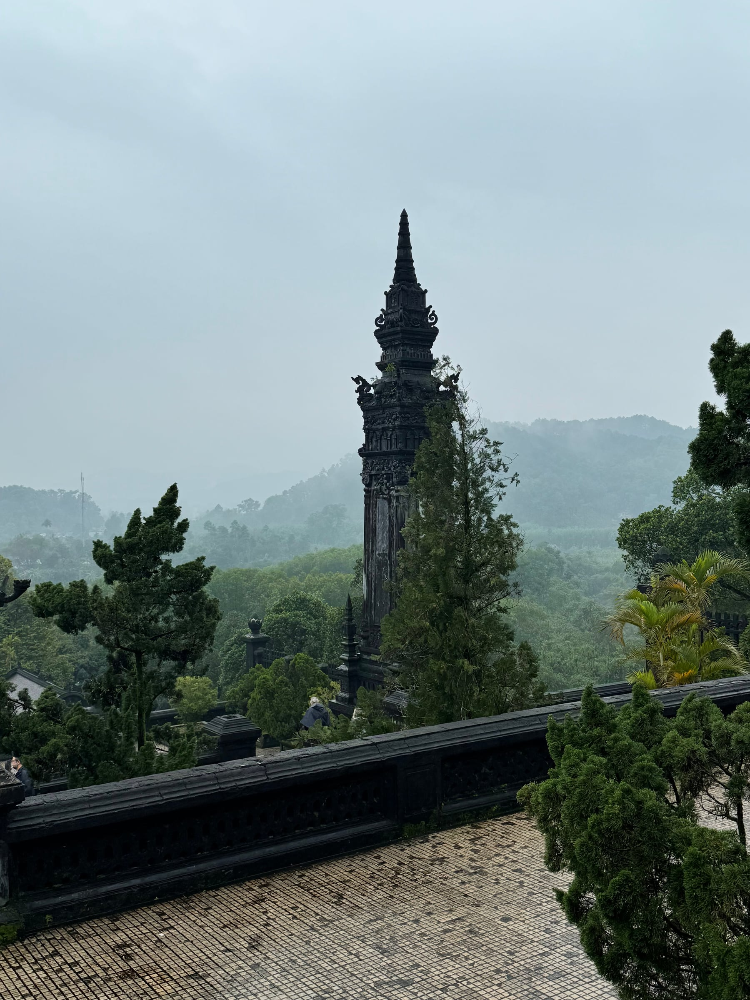

PHOTO JOURNAL / DECEMBER 2024
Vietnam
In December 2024, I traveled through Vietnam and found myself moving between very different rhythms: open water and crowded streets, misty mountains and bright tables, quiet temple grounds and cities in constant motion. These photographs hold the moments that stayed with me.
11 PHOTOGRAPHS

THE WATER
The first part of this story belongs to water. Limestone formations rose from the bay while boats and floating homes sat close to its surface. Every turn revealed another layer of rock fading into the distance.




AT DUSK
By evening, the bay softened into silhouettes. The water that had reflected blue and green all day turned dark, broken only by the warm lights of boats moving between the cliffs.
The landscape changed, and so did the pace.


ON LAND
Away from the bay, I began noticing smaller details: cool light over a mountain town, yellow flowers beside the road, and a meal arranged with as much color as the landscape outside.


THE CITY
The city carried a different energy. Motorbikes filled every opening in the street, signs climbed the buildings, and movement seemed to continue in every direction at once. There was always more to notice.


LOOKING BACK
What I remember most is the contrast: still water and crowded roads, mist and neon, old brick and new movement. Together, those shifts are what made the journey feel so alive.